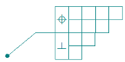
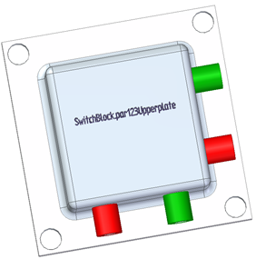

Create reference text
These instructions apply to inserting reference text in annotations in 2D and 3D environments.
-
Open the Select Reference Text dialog box by doing the following:
-
Position your cursor at an insertion point within an eligible annotation.
-
Click the Reference Text button
 .
.
Use the following table to see where you can insert reference text and where the Reference Text button is located.
For this object
To insert reference text here
Start here
Balloon
Upper (A), Lower (B), Prefix (C), Suffix (D)

Balloon command bar or the Balloon Properties dialog box, on the General tab
Callout
Callout text, Callout 2 text

Callout Properties dialog box, on the General tab
Feature control frame
Any of the rows in a feature control frame:

Feature Control Frame Properties dialog box, on the General tab
GOST weld symbol
Any of the four text fields:

GOST Weld Symbol Properties dialog box, on the General tab
Text box
Anywhere in a text box.
From the Text command bar, open the Insert Property Text dialog box.
Text profile
When resolved, the reference text string is created as part of the text profile.

Select the Text Profile command
 to open the Text dialog box.Tip:
to open the Text dialog box.Tip:The Properties dialog box is displayed automatically when you create callouts, datum frames, feature control frames, and GOST weld symbols. When editing these annotations, you can choose Properties from the shortcut menu.
-
-
In the Select Reference Text dialog box, do the following:
-
If you are working in a draft document, select a drawing sheet from the Sheet list. This is the sheet where the annotation that you want to reference is located.
-
From the Source type list, select the type of annotation you want to reference.
Tip:For information about the type of information you can reference, see the help topic, Select Reference Text dialog box.
-
From the Field list, specify which portion of the annotation text you want to reference.
The table grid is populated with annotation object IDs in the Source column and annotation values (if they exist) in the Value column.
-
In the table grid, locate the annotation text that you want to reference. You can:
-
Click a cell, and then look at the drawing sheet or the model graphics window to see which corresponding annotation is highlighted.
-
Select the Find shortcut command to find a specific value or object name.
-
Select the Sort shortcut menu command to sort the contents of a column. You also can double-click a column header to sort its contents.
-
-
Select the annotation text that you identified by doing either of the following:
-
Double-click the cell in the table grid.
-
Click the cell, and then click the Select button.
-
A preview of the text as it will appear in the annotation is displayed in the Preview box.
-
The matching property text is populated in the Reference text box.
-
-
-
To insert the reference text into the annotation at the cursor position, click OK.
-
If you select an annotation object that does not have a matching value in the document, the Preview box displays the null callout symbol:

-
After selecting the text, you can click the Copy button to copy the contents in the Reference text box to the Clipboard.
-
If a source annotation uses property text, the property text can be used in the reference text. When the underlying property changes, the reference text is updated.
-
You cannot create a circular reference. This causes a Loop Error message to be displayed. This happens when an annotation references itself, or when two annotations reference each other (Callout A references Callout B, and Callout B references Callout A).
How do I
Create property textFormat property text values
Update all property text
Convert property text
Convert all property text in a drawing or model
Learn more
Referencing propertiesUsing property text
Using reference text
Using exposed variables in property text
Look up more details
Select Property Text dialog boxSelect Symbols and Values dialog box
Select Reference Text dialog box
Format Values dialog box
Selecting a property text source
Basic reference and property text rules
Property text codes
Format codes to modify reference and property text output
Date and time format of property text
Property Text source list (Source: From Active Document)
Property text from drawing views
Property text from blocks
Property Text command
Update All Property Text command
Convert Property Text command
Convert All Property Text command